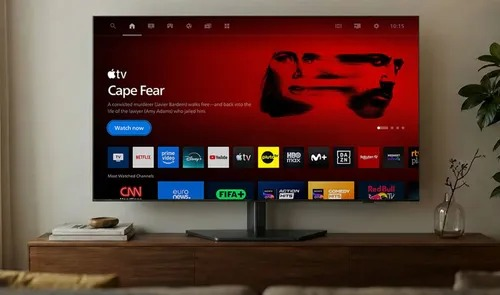

Capturas de Chromium a 1280×720. La imagen de salvapantallas está incluida sin alterar sus bytes. El reloj cambia de posición. Estas capturas no proceden del televisor físico.
Instalación y arquitectura · Auditoría · Comprobación en la TV

Se toman composición, escala de filas y jerarquía. No se copia el contenido promocional ni se incrusta esta captura en la app. El arte rojo de Inicio es original. Los nombres identifican servicios; no constituyen un catálogo de películas.
Los estados DIAL disponibles en la captura de diagnóstico usan respuestas de prueba. No demuestran comunicación con la TV del propietario. Clima usa «Sin datos» cuando falta el puente. Antes de sincronizar, revisar diseño y confirmar instalación física desde la Mac.